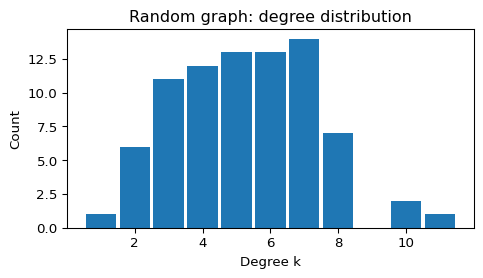
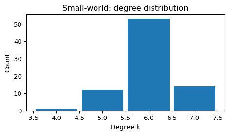
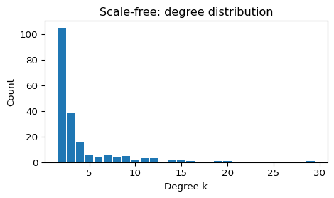

import matplotlib.pyplot as plt
import networkx as nx
SEED = 7
def summarize_graph(G, name="G"):
"""Print a small summary of common network statistics."""
n = G.number_of_nodes()
m = G.number_of_edges()
avg_k = 2 * m / n if n > 0 else 0
density = nx.density(G)
# Connectivity (undirected)
is_connected = nx.is_connected(G) if n > 0 else False
n_components = nx.number_connected_components(G) if n > 0 else 0
# Work on the largest connected component when disconnected
if n == 0:
L = float("nan")
C = float("nan")
else:
C = nx.average_clustering(G)
if is_connected:
L = nx.average_shortest_path_length(G)
else:
largest_cc = max(nx.connected_components(G), key=len)
H = G.subgraph(largest_cc).copy()
L = nx.average_shortest_path_length(H)
print(f"--- {name} ---")
print(f"N = {n}, E = {m}, <k> = {avg_k:.2f}, density = {density:.4f}")
print(f"connected = {is_connected}, components = {n_components}")
print(f"clustering C = {C:.3f}")
print(f"avg shortest path L = {L:.3f} (largest CC if disconnected)")
def plot_degree_histogram(G, title="Degree distribution"):
"""Plot a histogram of the node degrees, one bar per degree value."""
degrees = [deg for _, deg in G.degree()]
plt.figure(figsize=(5, 3))
plt.hist(degrees, bins=range(min(degrees), max(degrees) + 2), align="left", rwidth=0.9)
plt.xlabel("Degree k")
plt.ylabel("Count")
plt.title(title)
plt.tight_layout()
plt.show()Comparing Graph Models
Module 5: Complex Networks
The three previous pages built one model each. This page puts them side by side with the same summary metrics, so you can check the properties claimed for each model on a small graph:
- average degree \(\langle k \rangle\),
- density \(D\),
- average clustering coefficient \(C\),
- average shortest path length \(L\), on the largest connected component if the graph is disconnected.
The definitions and examples are in Paths and Components and Degree and Clustering.
Helper functions
Random graph
G_random = nx.erdos_renyi_graph(n=80, p=0.06, seed=SEED)
summarize_graph(G_random, name="Random (G(N,p))")
plot_degree_histogram(G_random, title="Random graph: degree distribution")--- Random (G(N,p)) ---
N = 80, E = 211, <k> = 5.28, density = 0.0668
connected = True, components = 1
clustering C = 0.078
avg shortest path L = 2.766 (largest CC if disconnected)
Small-world graph
G_sw = nx.watts_strogatz_graph(n=80, k=6, p=0.08, seed=SEED)
summarize_graph(G_sw, name="Small-world (Watts-Strogatz)")
plot_degree_histogram(G_sw, title="Small-world: degree distribution")--- Small-world (Watts-Strogatz) ---
N = 80, E = 240, <k> = 6.00, density = 0.0759
connected = True, components = 1
clustering C = 0.494
avg shortest path L = 3.694 (largest CC if disconnected)
The degree distribution stays narrow: most nodes keep a degree close to \(k = 6\).
Scale-free graph
G_sf = nx.barabasi_albert_graph(n=200, m=2, seed=SEED)
summarize_graph(G_sf, name="Scale-free (Barabási-Albert)")
plot_degree_histogram(G_sf, title="Scale-free: degree distribution")--- Scale-free (Barabási-Albert) ---
N = 200, E = 396, <k> = 3.96, density = 0.0199
connected = True, components = 1
clustering C = 0.075
avg shortest path L = 3.483 (largest CC if disconnected)
Most nodes have degree \(m = 2\) or \(3\), and a few hubs have a degree several times larger.
Exercise
The three graphs above have different sizes and mean degrees. Build a fair comparison: generate an Erdős-Rényi, a Watts-Strogatz and a Barabási-Albert graph with \(N = 200\) and \(\langle k \rangle = 4\), and run summarize_graph on each. Before you run it, predict which graph has the largest \(C\) and which has the smallest \(L\).
N = 200
G_er = # TODO: Erdős-Rényi with <k> = 4
G_ws = # TODO: Watts-Strogatz with k = 4 and p = 0.08
G_ba = # TODO: Barabási-Albert with <k> close to 4
for G, name in [(G_er, "ER"), (G_ws, "WS"), (G_ba, "BA")]:
summarize_graph(G, name)
Solution
The mean degree of \(G(N, p)\) is \((N-1)p\), so \(p = 4/199\). A Barabási-Albert graph has \(\langle k \rangle \approx 2m\), so \(m = 2\).
N = 200
G_er = nx.erdos_renyi_graph(N, 4 / (N - 1), seed=SEED)
G_ws = nx.watts_strogatz_graph(N, 4, 0.08, seed=SEED)
G_ba = nx.barabasi_albert_graph(N, 2, seed=SEED)
for G, name in [(G_er, "ER"), (G_ws, "WS"), (G_ba, "BA")]:
summarize_graph(G, name)--- ER ---
N = 200, E = 409, <k> = 4.09, density = 0.0206
connected = False, components = 4
clustering C = 0.015
avg shortest path L = 3.834 (largest CC if disconnected)
--- WS ---
N = 200, E = 400, <k> = 4.00, density = 0.0201
connected = True, components = 1
clustering C = 0.419
avg shortest path L = 7.766 (largest CC if disconnected)
--- BA ---
N = 200, E = 396, <k> = 3.96, density = 0.0199
connected = True, components = 1
clustering C = 0.075
avg shortest path L = 3.483 (largest CC if disconnected)The Watts-Strogatz graph has by far the largest clustering (\(C \approx 0.42\)), but with \(k = 4\) and \(p = 0.08\) its paths are still about twice as long as in the other two graphs. The Barabási-Albert graph has the shortest paths (\(L \approx 3.5\)), because its hubs act as shortcuts. The Erdős-Rényi graph has the lowest clustering and is not connected (4 components here), so its \(L\) refers to the largest component.
What’s Next?
Session 26 runs epidemics on these three models.